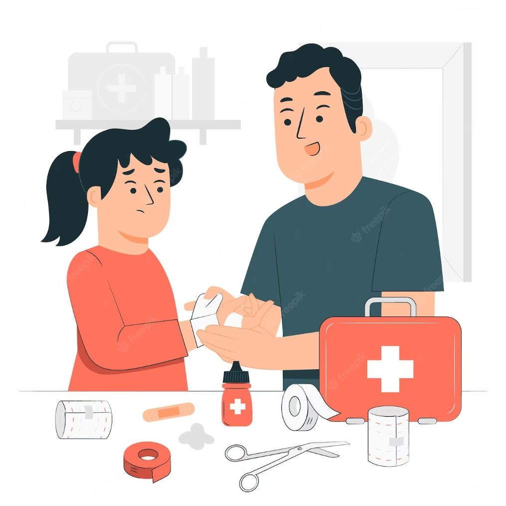

การปฐมพยาบาลและการรับมือเหตุฉุกเฉิน
การปฐมพยาบาลเป็นทักษะที่ทุกคนควรมี เพราะเหตุฉุกเฉินหรืออุบัติเหตุสามารถเกิดขึ้นได้ในชีวิตประจำวัน เช่น การถูกของมีคมบาด การหกล้ม การเล่นกีฬา หรือการเจ็บป่วยจากสภาพอากาศ เมื่อพบผู้ประสบเหตุ สิ่งแรกที่ควรคำนึงถึงคือความปลอดภัยของผู้ช่วยเหลือและผู้ประสบเหตุ จากนั้นจึงประเมินอาการและขอความช่วยเหลือจากหน่วยงานฉุกเฉินเมื่อจำเป็น การช่วยเหลือควรทำเท่าที่มีความรู้และความสามารถ เพื่อไม่ให้ผู้บาดเจ็บได้รับอันตรายเพิ่มขึ้น กรณีบาดแผลเล็กน้อย ควรล้างมือก่อนให้การช่วยเหลือ ใช้ผ้าสะอาดกดบริเวณที่เลือดออก และทำความสะอาดบาดแผลอย่างเหมาะสม หากเลือดออกมาก แผลลึก หรือมีสิ่งแปลกปลอมฝังอยู่ ควรได้รับการรักษาจากบุคลากรทางการแพทย์ กรณีข้อเท้าเคล็ด ควรหยุดกิจกรรมและพักบริเวณที่ได้รับบาดเจ็บ หลีกเลี่ยงการลงน้ำหนักมาก และสามารถใช้ความเย็นช่วยลดอาการปวดและบวมในช่วงแรก หากมีอาการรุนแรง เช่น ข้อผิดรูป ปวดมาก หรือไม่สามารถลงน้ำหนักได้ ควรไปพบแพทย์ สำหรับการช่วยชีวิตขั้นพื้นฐาน การทำ CPR หรือ Cardiopulmonary Resuscitation เป็นทักษะที่มีความสำคัญในกรณีที่บุคคลหมดสติและไม่หายใจตามปกติ ผู้ช่วยเหลือควรประเมินสถานการณ์ เรียกขอความช่วยเหลือ และดำเนินการช่วยฟื้นคืนชีพตามหลักการที่ได้รับการฝึกฝน นอกจากนี้ หากมีเครื่อง AED หรือ Automated External Defibrillator ควรนำมาใช้ตามคำแนะนำของเครื่อง อีกภาวะฉุกเฉินที่ควรระวังคือ Heat Stroke หรือโรคลมแดด ซึ่งเกิดจากร่างกายมีอุณหภูมิสูงมากและไม่สามารถระบายความร้อนได้อย่างเหมาะสม อาจมีอาการตัวร้อน สับสน อ่อนแรง หมดสติ หรือชัก ภาวะนี้ถือเป็นเหตุฉุกเฉิน ควรรีบขอความช่วยเหลือทางการแพทย์และช่วยลดอุณหภูมิร่างกายโดยเร็ว